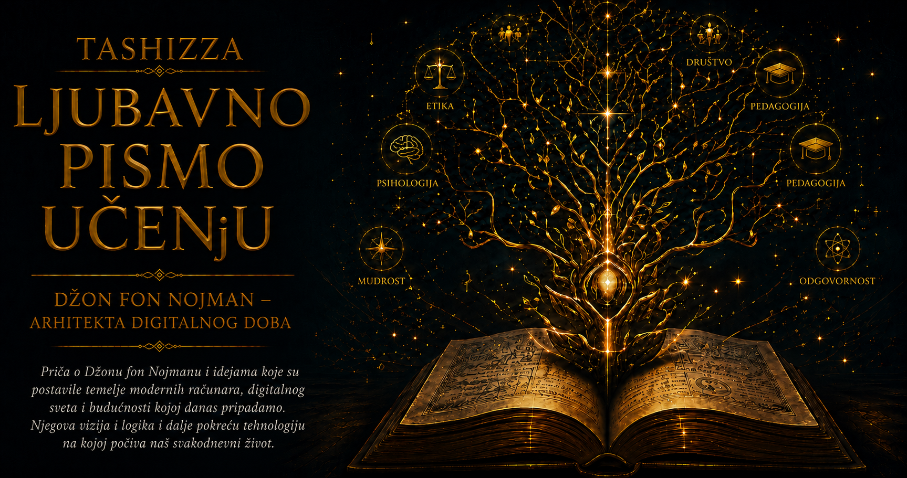

Ljubavno pismo učenju

Sve do sredine dvadesetog veka, sposobnost neke mašine uglavnom se mogla naslutiti iz njene građe. Sat je merio vreme zahvaljujući preciznom poretku zupčanika, vaga je upoređivala težine, tabulator je razvrstavao podatke prema rasporedu rupica na karticama, dok su prvi elektronski računari izvršavali postupke utisnute u njihove kablove, prekidače i funkcionalne jedinice. Kada bi se promenio zadatak, ljudi su morali da preurede fizički put kojim će mašina prolaziti kroz računanje. Elektronski impulsi kretali su se zapanjujućom brzinom, ali je pripremanje njihovog puta zahtevalo sate, dane i mukotrpnu pažnju stručnjaka.
U tom raskoraku između brzine izvršavanja i sporosti pripreme nalazilo se pitanje koje će promeniti prirodu računara. Ako brojevi mogu da budu predstavljeni elektronskim stanjima i sačuvani u memoriji, zbog čega se na isti način ne bi čuvala i uputstva za njihovu obradu? Program bi tada prestao da bude fizički raspored veza u mašini i postao zapis koji se može uneti, sačuvati, promeniti i ponovo upotrebiti. Ista materijalna konstrukcija mogla bi da obavlja mnoštvo različitih poslova, jer bi njenu trenutnu namenu određivao sadržaj memorije.
Ta zamisao pripadala je široj intelektualnoj revoluciji u kojoj su se susreli matematička logika, teorija izračunljivosti i iskustvo graditelja prvih elektronskih mašina. Alan Tjuring je još tridesetih godina teorijski pokazao da jedna univerzalna mašina može oponašati različite postupke ukoliko dobije njihov formalni opis. Tokom razvoja ENIAC-a i njegovog planiranog naslednika EDVAC-a, Dž. Presper Ekert, Džon Mokli, Herman Goldstajn i drugi članovi istraživačke zajednice suočavali su se sa praktičnim pitanjima elektronske memorije, upravljanja i programiranja. Džon fon Nojman povezao je te tokove u jasan arhitektonski opis čija je snaga počivala u tome što se mogao razumeti, preneti i dalje razvijati.
Dokument poznat kao First Draft of a Report on the EDVAC, sastavljen 1945. godine, predstavio je logičku organizaciju računara kroz nekoliko funkcionalno povezanih celina. Memorija je trebalo da čuva brojčane vrednosti i instrukcije, aritmetička jedinica da obavlja operacije nad podacima, upravljačka jedinica da određuje redosled izvršavanja, dok su ulazni i izlazni organi povezivali mašinu sa ljudima i spoljnim svetom. Ovaj raspored nije propisivao od kog materijala računar mora biti napravljen. Opisivao je odnose među njegovim osnovnim funkcijama, pa je mogao da nadživi vakuumske cevi, živine memorijske linije, magnetna jezgra, tranzistore i integrisana kola.
U osnovi arhitekture nalazilo se duboko svojstvo digitalnog predstavljanja: instrukcija i podatak mogu da budu zapisani istom vrstom simbola. Niz binarnih cifara može predstavljati broj, slovo, adresu u memoriji, deo slike ili naredbu za sabiranje, zavisno od mesta koje zauzima i načina na koji ga sistem tumači. Time je program ušao u isti simbolički prostor u kome se nalaze sadržaji koje obrađuje. Mogao je da bude kopiran, premešten, upoređen, preveden, ispravljen i sačuvan za buduću upotrebu.
Računar je tako dobio neobičnu sposobnost da promeni svoju namenu ne menjajući sopstvenu fizičku građu. Jedna mašina mogla je da izračunava putanju projektila, modeluje atmosferu, obrađuje poslovne evidencije, proučava kretanje čestica ili rešava matematičke jednačine, pod uslovom da svaki od tih postupaka bude dovoljno precizno izražen programom. Hardver je pružao polje mogućnosti, a program je iz tog polja birao privremenu ulogu uređaja. Iz ove razdvojenosti izrasla je univerzalnost računara, osobina zahvaljujući kojoj telefon u jednom trenutku postaje fotoaparat, zatim biblioteka, karta, muzički instrument, prevodilac ili sredstvo razgovora.
Upravljačka jedinica prolazi kroz program urednim ciklusom: dohvaća instrukciju iz memorije, tumači njeno značenje, usmerava odgovarajuću operaciju i prelazi na sledeći korak. Složeni postupci nastaju povezivanjem ograničenog broja jednostavnih naredbi, kao što su prenošenje podatka, sabiranje, poređenje i promena toka izvršavanja. Uslovno grananje omogućava programu da izabere dalji put prema dobijenom rezultatu, dok petlja sažima veliki broj ponavljanja u kratak zapis. Mašina dobija sposobnost prilagođavanja podacima unutar granica formalnih pravila koja je čovek postavio.
Iz mogućnosti da instrukcije budu dostupne kao zapis razvila se nova vrsta tehničkog stvaralaštva. Program je mogao da putuje od autora do korisnika, da se deli među istraživačkim ustanovama, ugrađuje u veće celine i prilagođava novim potrebama. Nastali su potprogrami, programske biblioteke, asembleri, kompajleri i operativni sistemi, a svaka generacija alata omogućavala je čoveku da složenije namere izrazi sve udaljenije od pojedinačnih električnih impulsa. Softver je postao prenosivo znanje o postupku, tekst čija posebnost leži u tome što ga mašina može izvršiti.
Fon Nojmanova arhitektura uticala je i na način na koji razmišljamo o rešavanju problema. Zahtev da se postupak pretvori u program primorava nas da prepoznamo početne uslove, razložimo zamisao na korake, odredimo mesta grananja i preciziramo uslov završetka. Nejasna namera mora dobiti oblik dovoljno uređen da bi je mašina mogla slediti. Programiranje je zbog toga postalo više od stručne veštine: ono je vežba u razlikovanju onoga što želimo od onoga što smo zaista umeli da izrazimo.
Ista preciznost otkriva granicu računarske poslušnosti. Mašina može neumorno ponavljati pravilo i primenjivati ga nad milionima zapisa, ali iz same arhitekture ne dobija sposobnost da proceni da li je cilj mudar, podatak pravedno izabran ili posledica prihvatljiva. Pogrešna pretpostavka pretočena u program dobija brzinu, razmeru i privid nepristrasnosti. Što je izvršavanje pouzdanije, to je veća ljudska odgovornost za pravilo koje se izvršava.
Trajnost ove ideje ne znači da su savremeni računari ostali jednostavne mašine iz četrdesetih godina. Procesori danas imaju više jezgara, odvojene keš memorije, paralelne izvršne jedinice, grafičke procesore i specijalizovane akceleratore, dok pojedini sistemi kombinuju osobine fon Nojmanove i harvardske arhitekture. Razvijaju se računanje u memoriji, neuromorfni čipovi i konstrukcije prilagođene ogromnim tokovima podataka. Ipak, u većini tih sistema opstaje prepoznatljiva zamisao da se ponašanje opšte mašine određuje programom koji joj je dostupan u digitalnom obliku.
Najdublje nasleđe fon Nojmanove arhitekture nalazi se u promeni odnosa između materije i mogućnosti. Raniji alat dobijao je sposobnost pre svega svojim oblikom, dok programabilna mašina veliki deo svojih sposobnosti prima kroz zapis. Jedan uređaj postao je prostor u kome mogu da se ostvare bezbrojni postupci, pod uslovom da ih čovek ume dovoljno jasno opisati. Time je računar prerastao u univerzalni medij rada, znanja i stvaranja, a digitalni svet dobio arhitekturu u kojoj ideja može postati izvršiva.